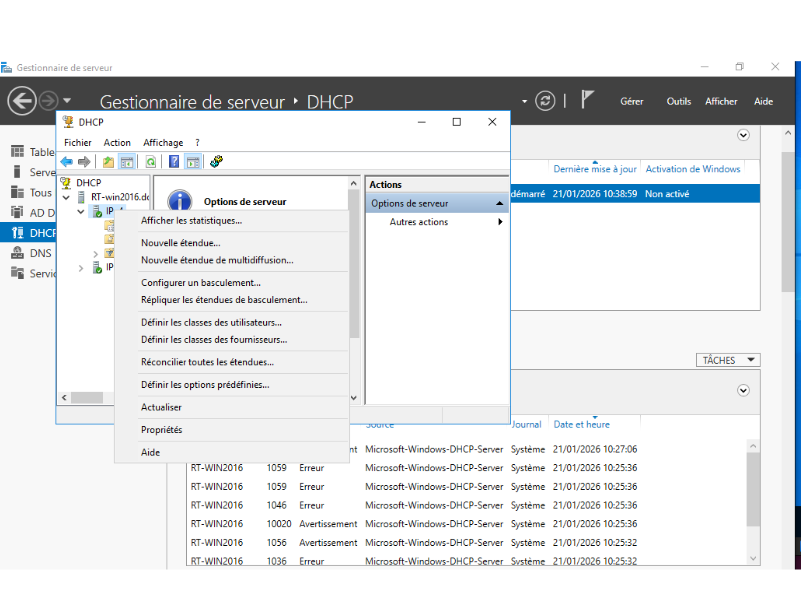
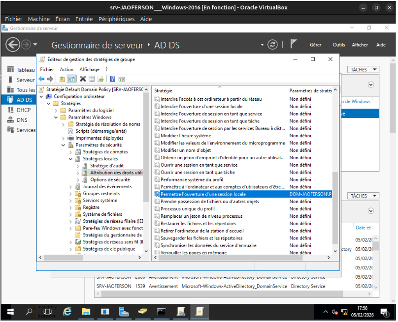
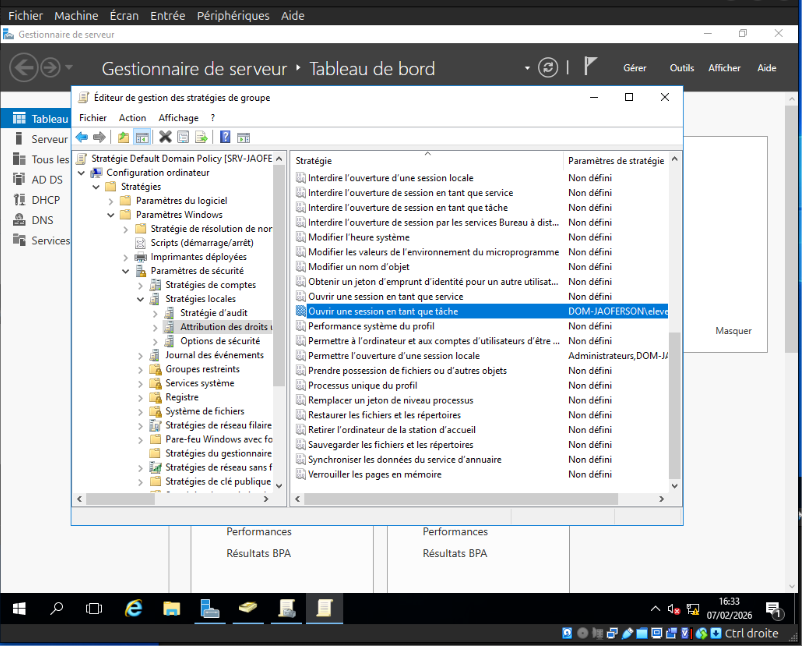

Administrer
- Pour la mise en place d'un réseau local, j'ai suivi les étapes de configuration d'un switch et d'un routeur.
- Je l'ai fait pour avoir des connaissances en configuration d'équipement réseau.
- Exemple :
 Switch VLAN
Switch VLAN
 Routeur Route-on-stick
Routeur Route-on-stick
 OSPF
|
RIP
OSPF
|
RIP
- Les difficultés rencontrées étaient dans les branchements des équipements en physique et l'adressage car quelquefois il y a des personnes qui oublie de mettre correctement le masque, les branchements ne sont pas branchés aux ports correspondants.
Ce que je ferai autrement
 Switch VLAN
Switch VLAN Routeur Route-on-stick
Routeur Route-on-stick OSPF
OSPF- J'ai utilisé plusieurs machines virtuelles connectées à une passerelle Linux.
- Dans un premier temps, je l'ai fait pour être capable de créer une passerelle entre un réseau Internet et le réseau de l'IUT. Puis avoir accès à Internet via la passerelle.
- Exemple :

Création de la passerelle

Adressage de la seconde carte réseau via la commande dhclient
- Dans cette partie, la difficultés était dans la création de la machine qui sert de passerelle car si l'une des cartes réseau n'est pas correctement crée, elle ne pourra pas demander une requête dhclient dans un autre réseau.
Ce que je ferai autrement
- Dans un TP d'administration système, nous avons travaillé avec des machines virtuelles (Server Windows 2016, PC Windows10_Client).
- L'objectif était de comprendre le fonctionnement : d'un serveur DHCP et d'un serveur DNS, les autorisations attribuées aux utilisateurs, la création de session.
- Pour la création des machines virtuelles, nous les avons configurées de sorte à ce qu'elles puissent se connecter entre elles en interne dans la machine hôte. Pour commencer nous avons configurer le serveur DHCP dans le serveur.


Adressage du serveur et de la machine client

paramètrage du serveur DHCP


Ouverture de session depuis une machine connectée au serveur
- J'ai rencontré beaucoup difficultés sur les attributions de droits car sur windows c'était vraiment dificile de se repérer.
- J'ai appris à me servir d'un serveur et à attribuer des droits.
Ce que je ferai autrement